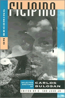

A collection of writings by a prolific and political Filipino American writer
A collection of writings by a prolific and political Filipino American writer


 A collection of writings by a prolific and political Filipino American writer
A collection of writings by a prolific and political Filipino American writer

|  |
On Becoming FilipinoSelected Writings of Carlos BulosanCarlos Bulosan, edited by E. San Juan, Jr.paper EAN: 978-1-56639-310-2 (ISBN: 1-56639-310-8) |
"[P]resents an excellent selection of the work of this 20th-century Filipino writer.... Editor San Juan has provided an erudite 42-page discussion of Bulosan's work and life as well as a history of Filipinos in America."
—Library Journal
A companion volume to The Cry and the Dedication, this is the first extensive collection of Carlos Bulosan's short stories, essays, poetry, and correspondence. Bulosan's writings expound his mission to redefine the Filipino American experience and mark his growth as a writer. The pieces included here reveal how his sensibility, largely shaped by the political circumstances of the 1930s up to the 1950s, articulates the struggles and hopes for equality and justice for Filipinos. He projects a "new world order" liberated from materialist greed, bigoted nativism, racist oppression, and capitalist exploitation. As E. San Juan explains in his Introduction, Bulosan's writings "help us to understand the powerlessness and invisibility of being labeled a Filipino in post Cold War America."
"Though written in the 1940s and 1950s, Bulosan's work has particular relevance in today's racially charged political debates."
—Asian Week
"On Becoming Filipino marks a decisive moment in our estimation of Carlos Bulosan's inexhaustible legacy for Asian American and twentieth-century U.S. literatures. This anthology amply captures the startling contemporaneity and political resonance of Bulosan's achievement, and dares us to push the exhausted debates over literary ethnicity and multiculturalism beyond their impoverished terms of bourgeois identity, cultural nationalism, and pluralist representation. This is a remarkably accomplished effort to frame and allegorize Bulosan's writing in terms of a Filipino nomadism ('becoming') and its uneasy displacements across the terrains of U.S.-Philippine colonial and postcolonial relations."
—Oscar V. Campomanes, University of California, Berkeley
"In this book, Bulosan's political views—Marxist, anticapitalist, antiracist, and anticolonialist—are explored as they evolve, from the late 1930s to the early 1950s.... On Becoming Filipino is often a stark testimony to the lives of Filipino migrants: 'I feel like a criminal running away from a crime I did not commit,' Bulosan writes. 'And the crime is that I am a Filipino in America.' Bulosan's letters and essays reveal that...America would always be in his heart—as dream, as ideal, as object of a double-edged love which hurt as it both soothed and savaged."
—Viet Thanh Nguyen, A.MAGAZINE
Publication History
Acknowledgments
Introduction
Stories
1. Passage into Life
2. The Story of a Letter
3. Be American
4. The Soldier
5. As Long as the Grass Shall Grow
6. Life and Death of a Filipino in America
7. Homecoming
8. The Thief
9. The End of the War
Essays
10. How My Stories Were Written
11. The Growth of Philippine Culture
12. My Education
13. Freedom from Want
14. Filipino Writers in a Changing World
15. I Am Not a Laughing Man
16. The Writer As Worker
Poems
17. Biography
18. Surely the Living Departed
19. The Manifesto of Human Events
20. Blood Music, 1939
21. The Shadow of a Tear
22. Death and Transfiguration
23. Waking in the 20th Century
24. Letter in Exile
25. Portrait with Cities Falling
26. For a Child Dying in a Tenement
27. The Foreigners
28. Needing No Time
29. Hymn to a Man Who Failed
30. Factory Town
31. Meeting with a Discoverer
32. Biography Between Wars
33. If You Want to Know What We Are
34. To My Countrymen
Correspondence
35. Letters (1937-55)
36. Letters to an American Woman
37. Letter to a Filipino Woman
Autobiographical Sketch
Selected Writings by and about Carlos Bulosan
Criticism and Commentary on Bulosan
About the Editor
Born in 1911 in the Philippines to a peasant family, Carlos Bulosan was one of the first wave of Filipino immigrants to come to the United States in the 1930s. After several arduous years as a farmworker in California, Bulosan became involved with radical intellectuals and started editing the workers' magazine The New Tide.
While hospitalized for three years for tuberculosis and kidney problems, Bulosan began writing poetry and short stories. Despite having little formal education, he saw his talent for writing as a means to give a voice to Filipino struggles, both in the Philippines and in the United States. He went on to publish three volumes of poetry, a best-selling collection of stories, The Laughter of My Father, and America Is in the Heart, the much acclaimed chronicle based on his family's battle to overcome poverty, violence, and racism in the United States. The Cry and the Dedication carries on Bulosan's passionate, satirical style.
 | E. San Juan, Jr. is Fellow of the Center for the Humanities and Visiting Professor of English, Wesleyan University, and Director of the Philippines Cultural Studies Center. He was recently chair of the Department of Comparative American Cultures, Washington University, and Professor of Ethnic Studies at Bowling Green State University, Ohio. He received the 1999 Centennial Award for Literature from the Philippines Cultural Center. His most recent books are Beyond Postcolonial Theory, From Exile to Diaspora, After Postcolonialism, and Racism and Cultural Studies. |
Asian American Studies
Literature and Drama
Asian American History and Culture, edited by K. Scott Wong, Linda Trinh Võ, and Cathy Schlund-Vials.
Founded by Sucheng Chan in 1991, the Asian American History and Culture, series has sponsored innovative scholarship that has redefined, expanded, and advanced the field of Asian American studies while strengthening its links to related areas of scholarly inquiry and engaged critique. Like the field from which it emerged, the series remains rooted in the social sciences and humanities, encompassing multiple regions, formations, communities, and identities. Extending the vision of founding editor Sucheng Chan and emeriti editor Michael Omi and David Palumbo-Liu, series editors K. Scott Wong, Linda Trinh Võ, and Cathy Schlund-Vials continue to develop a foundational collection that embodies a range of theoretical and methodological approaches to Asian American studies.
© 2015 Temple University. All Rights Reserved. This page: http://www.temple.edu/tempress/titles/1184_reg.html.